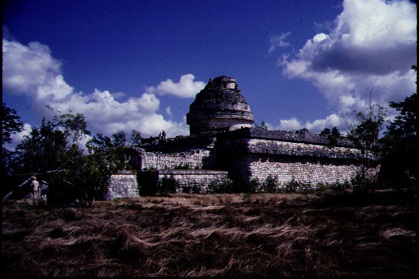

Photoshop and Scanning

ThisThis image was scanned and altered during
one of our first class meetings.
Images is copyrighted by Dr.
Ruben Mendoza.
Manipulated with Photoshop using filters
and effects these images show what is possible with the use of
technology.
All the images were taken in a studio setting and I believe with
close to an f-stop of 11 and shutter speed of about 60.
Courtney Kuhn
Spring 2000